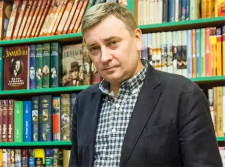
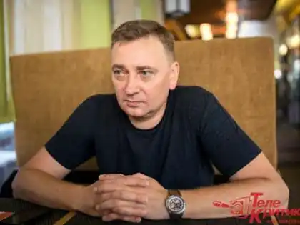

Євген Положій народився 11 липня 1968 року в селищі Терни на Сумщині. Його батько український письменник та сценарист Віктор Положій. Перші чотири роки свого життя Євген провів у Тернах. Його батьки розлучилися, і він жив у бабусі з дідусем. У чотири роки Євген переїхав до інших бабусі й дідуся в місто Курськ. На новому місці у малого Євгена відбувся "лінгвістичний шок", оскільки до того він ніколи в житті не чув російської мови.
З п'яти років він мешкав в Сумах. У школі полюбляв гуманітарні предмети й фізкультуру.
Вищу освіту здобув у Сумському педагогічному університеті імені А. С. Макаренка за спеціальністю "російська мова та література". Був журналістом у багатьох періодичних виданнях. Закінчив школи IREX U-Media: головних редакторів, газетних менеджерів, бізнес-тренерів для мас-медіа. Працював головним редактором сумських видань "Уік-енд" та "Тєлєнєдєля-Суми", радіостанції "Всесвіт". Був автором та ведучим кількох інформаційно-розважальних програм на ТРК "Відікон". У 1997 році програма "Світ/Sweet" стала переможцем міжнародного фестивалю "Надія" (Ялта). На студії "Монолог" як режисер створив відеокліп групи "Майа" (лауреат всеукраїнського конкурсу "Срібні хвилі", 1998 р., Харків). З грудня 1998 р. по теперішній час — головний редактор сумської суспільно-політичної газети "Панорама". Євген Положій є автором багатьох книг: "Туркін", вірші та проза (рос.), 1996, видавництво "Степ" "Обрати янгола", роман-газета, 2002, "Університетська книга". Грамота президента Форуму видавців у Львові. "Мері та її аеропорт", роман (рос.-укр.), 2003, "Університетська книга" "Туркін та ½. Повість про справжнього самурая", вірші, проза (рос.), 2004, "Університетська книга. "ДАсвіданія!", збірка віршів, 2007, "Університетська книга" "Дядечко на ім'я Бог", роман, 2008, "Фоліо" "Вежі мовчання", роман, 2009, "Фоліо" "По той бік Пагорба", роман, 2010, "Нора-Друк" "Одіссея", збірка перевиданих творів, 2011, "Фоліо" "Риб'ячі діти", 2014, Харків, "Фоліо" "Іловайськ", 2015, Харків, "Фоліо" "П'ять секунд, п'ять днів", 2016, "Нора-друк" "Фінальний епізод (війни, яка триває 400 років)", 2023, "Vivat" У 2008 році у видавництві "Фоліо" вийшли три книги: "Потяг" (ремікс роману "Обрати янгола" та нові оповідання), "Мері та її аеропорт" (нова редакція) та новий роман "Дядечко на ім'я Бог".